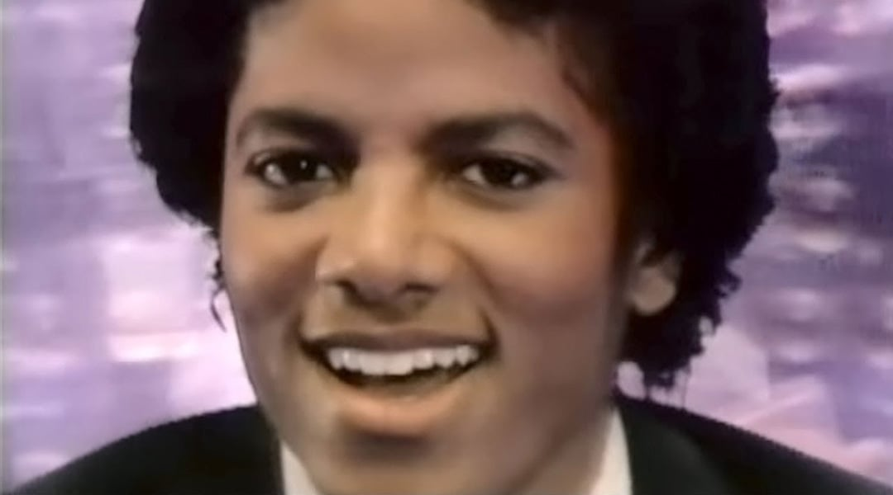
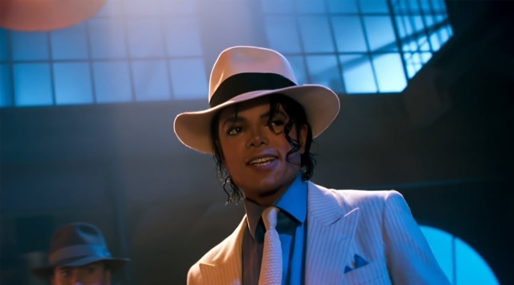

Todos os videoclipes
Em ordem cronológica. Clique num cartaz para abrir o clipe — neste arquivo, a imagem é parte inseparável da obra.
Momentos do videoclipe
Os trinta e três clipes marcam a evolução do próprio formato. A imagem deixa de acompanhar a música e passa a contar uma história independente.
1979 — 1988 · A invenção
“Don’t Stop ’Til You Get Enough” mostra o corpo a dançar sozinho. “Thriller” mostra o clipe a tornar-se cinema. “Man in the Mirror” transforma o R&B numa reflexão sobre si próprio — e o moonwalk, em 1983, torna-se gesto partilhado.
1991 — 1997 · A mensagem
“Black or White”, “Heal the World” e “Earth Song” usam o videoclipe como palanque social. O equilíbrio entre a crítica e a baixa comercial torna-se o tema dominante: é a fase em que o artista assume a voz.
2001 · O regresso
“You Rock My World” e “Cry” mostram um artista que já não precisa de explicar o seu valor. O clipe volta a ser espetáculo: o corpo, o luxo, a técnica.

